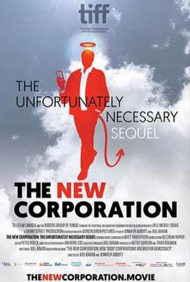

About the film
DC Premiere
November 6, 2026
, 8:00 PM
U.S. Navy Memorial
Non-disclosure agreements were designed to protect trade secrets. Today they reach into workplaces, newsrooms and private lives, binding ordinary people to silence about what happened to them, often for years.
My NDA
follows three people who decide, at extreme personal risk, to break theirs: Ifeoma Ozoma, a former Pinterest executive who called out the company for racial disparities in salary levels; former
National Enquirer
editor Lachlan Cartwright and Ashley Kostial, whose story gives the film its most gripping stakes.
Directors Juliane Dressner and Miriam Shor, who has signed an NDA herself, follow each decision in close observational detail as the legal, financial and emotional pressure mounts. What emerges is a portrait of corporate secrecy working as a psychological weapon, and of the toll it takes on the people bound by it. Part legal thriller, part intimate portrait,
My NDA
shows how a simple contract can keep criminal wrongdoing off the record, and what it takes for someone to speak anyway.
Screening followed by a Q&A with directors Juliane Dressner and Miriam Shor; film participants Ashley Kostial and Matt Drange; Jennifer Nelson, director of Pre-Publication Review & Journalist Support at the Reporters Committee for Freedom of the Press, and Kim Williams, founder of the Fair Path Project, moderated by Jasmine Styles, news anchor at WJLA in Washington.
Juliane Dressner
Miriam Shor
Ashley Kostial
Matt Drange
Jennifer Nelson
Jasmine Styles
Kim Williams
At the festival
- 2026 Spotlight
More films on these topics
- Short Strand: Against the GrainSteven Leckart · Maia Wikler2026

The New Corporation: The Unfortunately Necessary SequelThe New Corporation2020 · 106 min Kikuyu LandAndrew H. Brown, Bea Wangondu2026 · 93 min
Kikuyu LandAndrew H. Brown, Bea Wangondu2026 · 93 min A Month in MinnesotaAnnie Sundberg2026 · 40 min
A Month in MinnesotaAnnie Sundberg2026 · 40 min- An Unknown SubstanceSteven Leckart · Maia Wikler2026 · 39 min
 Free Joan LittleYoruba Richen2026 · 36 min
Free Joan LittleYoruba Richen2026 · 36 min